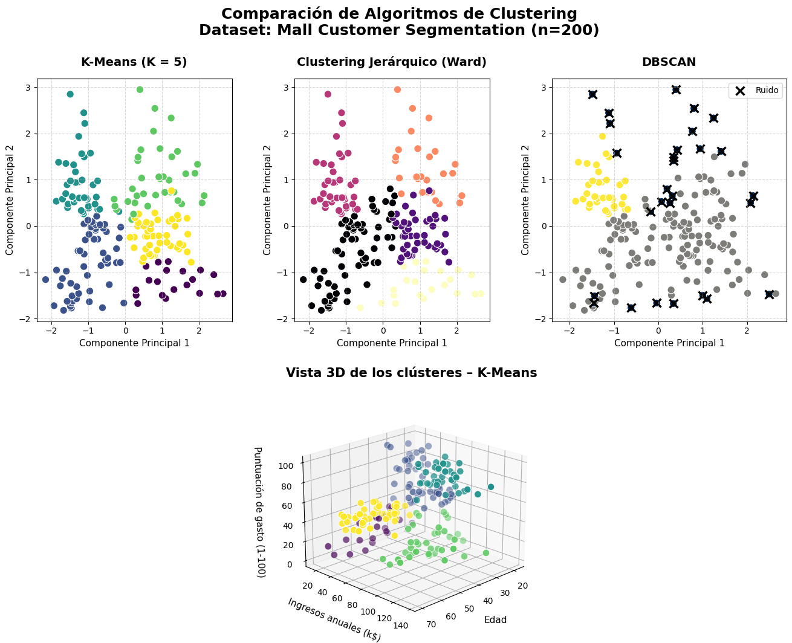

🤖 GRUPO "X"
Inicio
Objetivos
Datos
Algoritmos
Comparación
Conclusiones
🎓 Curso de Inteligencia Artificial
Estudio Comparativo de Clustering
K-means • Clustering Jerárquico • DBSCAN
Explorar el Estudio 🚀
↓
🎯 Objetivos del Estudio
📊 Caso de Estudio y Datos
🔬 Análisis de Algoritmos
⚖️ Comparación de Resultados

📊 Comparación Visual de los Tres Algoritmos de Clustering
💡 Conclusiones